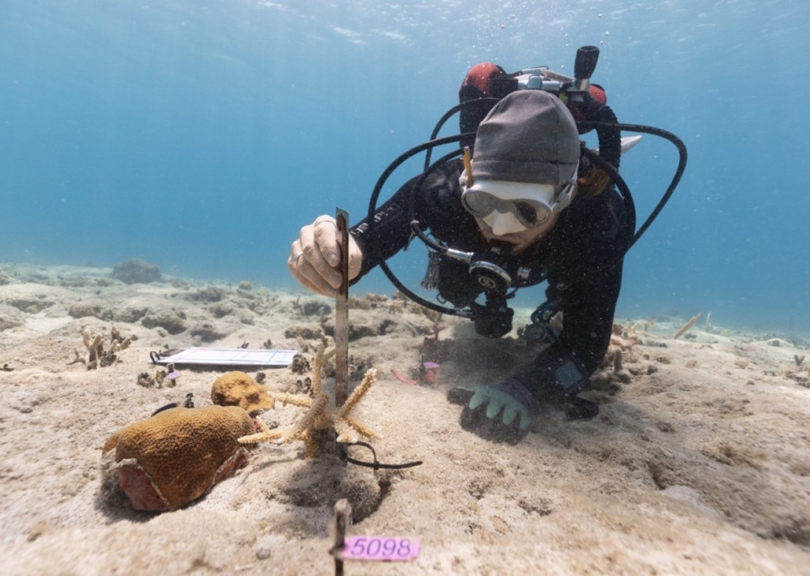
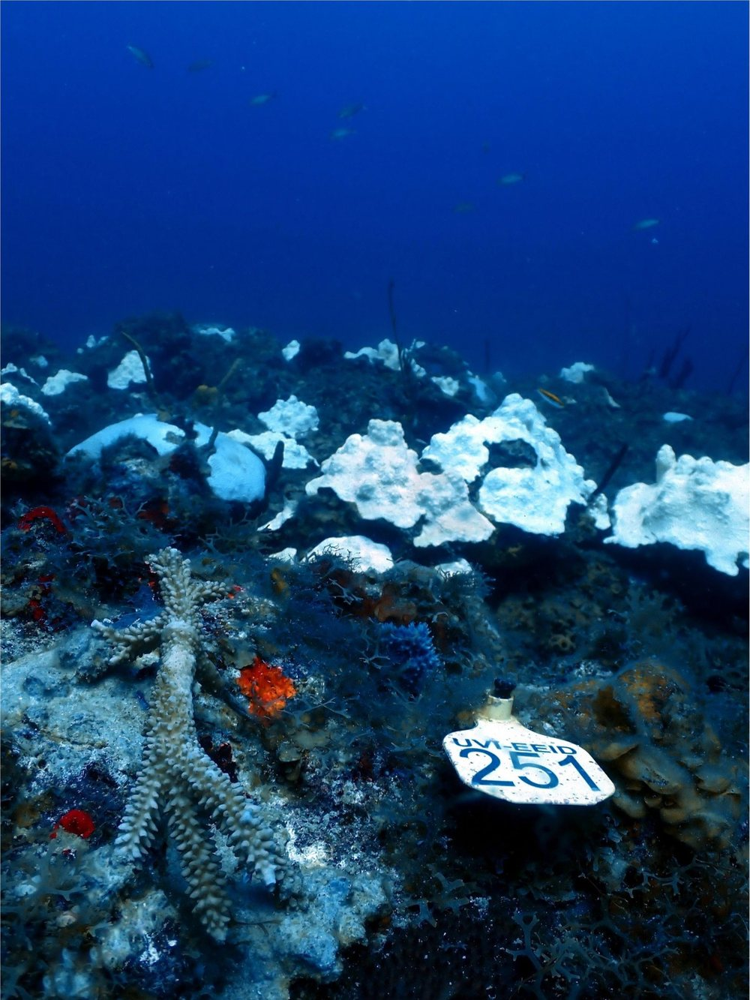
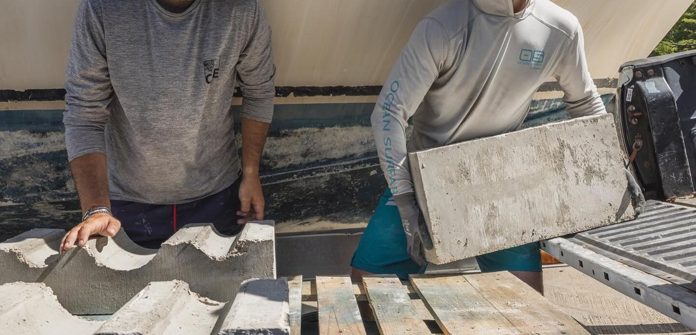
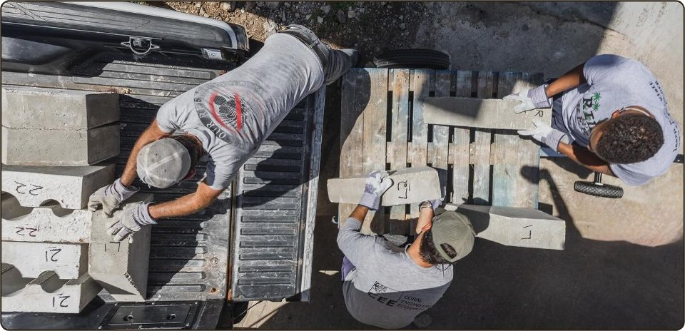

In the nursery
Fragments in both the in-water and land-based nurseries are tracked for growth, mortality, disease, predation and bleaching — which tells us which species and genotypes are the best growers and survivors.
Testing what works, measuring what lasts, and building new habitat.
Part of Reef Response’s mission is to ensure best practices through scientific research.
We are a university program, and the questions we answer feed straight back into the work: which genotypes survive, which species help each other, how outplanted corals fare years later, and whether engineered habitat can stand in for what has been lost.

Restoration only improves if someone counts the results. We monitor corals in the nurseries and after they go back on the reef.
Fragments in both the in-water and land-based nurseries are tracked for growth, mortality, disease, predation and bleaching — which tells us which species and genotypes are the best growers and survivors.
Outplanted corals are surveyed regularly for growth, mortality and health, and that record decides where and how we plant next.
We measure changes in coral cover and in fish communities, so success is judged by the reef as a whole rather than by our corals alone.
In 2023, record heat set up a Caribbean-wide mass bleaching event. Ahead of the peak, we moved staghorn coral off the nursery trees and planted it down a single reef slope — to find out whether depth could keep it alive.
Staghorn coral (Acropora cervicornis) grows in shallow, bright water, which is exactly where bleaching hits hardest. Deeper reefs are darker and, we suspected, less punishing during a heat wave. So we took fragments from the shallow nursery and outplanted replicate cohorts of the same genotypes along one continuous slope — at 20, 70, 100, and 120 feet — keeping matching cohorts in the nursery at 15 feet. Depths were chosen where wild staghorn already grows.
Temperature was much the same at every depth. Light was not. And the corals responded to the difference: bleaching and death both fell as depth increased, and the deeper corals recovered better. The same pattern showed up inside the nursery itself, where corals on the deeper branches of the trees fared better than those near the surface.
Genotype mattered too. At least one genotype did better in the shallows, against the trend — a reminder that a refuge for one coral is not a refuge for all of them, and a practical argument for how we arrange genotypes in the nursery.

deepest outplanting on the slope
corals outplanted across five genotypes in 2023
back-to-back bleaching years tracked, 2023 and 2024
2024 brought bleaching again, back to back, and we scaled the experiment up to meet it: twice as many genotypes, twice as many fragments per genotype at each depth, and molecular sampling alongside the survey work — gene expression, dominant symbiont, and bioassays. The advantage of depth showed up more clearly in that second year than in the first.
Deep outplanting is not a way to rebuild a shallow reef. It is a way to keep genetics alive through a heat wave that the shallows may not survive — a hedge, held in darker water, against the years ahead.
Led by Sonora Meiling, with Jason Quetel and Dr. Marilyn Brandt. Presented at Reef Futures.
A short documentary following the experiment, from the nursery trees to 120 feet.
Reef Response is a university program, and much of the science runs through students — graduate researchers at UVI and interns spending a summer with us.
Their projects sit inside the restoration work rather than alongside it: the corals, the nurseries and the artificial reef are all study systems, and what the students find feeds back into how we restore.
Analyzing the role biofilm can play in the growth of stony corals on artificial reef substrates — work that runs on the artificial reef itself.
Investigating the ambient conditions that influence a coral’s susceptibility to bleaching, so restoration can favour the corals and sites most likely to hold on.
Testing whether corals grown on domes can be hardened against heat stress. Kadejsha ran this as a summer intern and is now a graduate student, looking to carry the work forward.
The first artificial reef in the U.S. Virgin Islands — built in the shape of a Taíno petroglyph.
Artificial reefs can be an effective restoration tool, providing shoreline protection, fish habitat, and controlled substrate for coral restoration research. To test artificial reefs as alternative fisheries habitat for the USVI Department of Planning and Natural Resources following Hurricanes Irma and Maria, we designed the territory’s first artificial reef to incorporate Indigenous heritage.

The U.S. Virgin Islands sit within a Caribbean island chain carrying deep Indigenous heritage. Taíno peoples inhabited these islands for centuries, leaving artifacts and petroglyphs — carved rock symbols — across St. John and the cays of St. Thomas. These symbols persist as living cultural touchstones recognized widely across the territory today.
Petroglyph symbols provided the design language for the reef structure. The double-spiral motif is among the most recognizable, appearing across rock faces and in artisan works throughout the territory.
The structure was built from marine-grade concrete modular units, arranged to replicate that motif at reef scale. The modules incorporate surface texturing and void complexity to maximize settlement substrate and fish community habitat.
concrete modules
pounds total
feet, and 2 ft tall
Fragments were outplanted on both the artificial reef and the adjacent natural reef to compare survival and growth. Periodic 3D photogrammetric models track colony change over time without destructive sampling.
Stationary point count surveys run quarterly to measure fish abundance and size distribution, assessing the artificial structure against sand and natural reef reference sites.
An Acoustic Doppler Current Profiler was deployed before installation and remains in place, evaluating wave energy attenuation and flow modification attributable to the structure’s footprint.


Reef Response runs work that reaches beyond the nurseries — from habitat engineering to disease response and community science.
Monitoring surveys, photogrammetry and paid interns are all funded by donations.